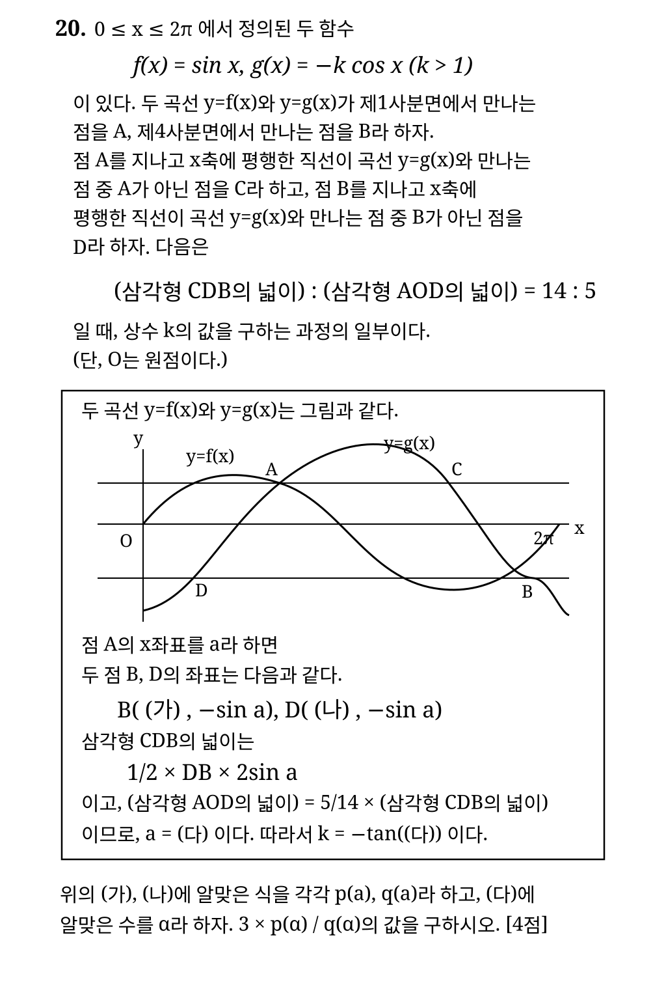

전체 풀이
A의 x좌표를 a라 하면 sin a=-k cos a이므로 k=-tan a이고, a는 π/2와 π 사이에 있습니다.
같은 y값을 갖는 g(x) 위의 점들을 이용하면 B=(a+π,-sin a), D=(π-a,-sin a)입니다. 따라서 DB=2a입니다. 또 C의 y좌표는 sin a이므로 삼각형 CDB의 높이는 2sin a이고, 넓이는 2a sin a입니다.
삼각형 AOD의 넓이는 좌표를 이용하면 (π/2)sin a입니다. 따라서 넓이의 비는 2a sin a : (π/2)sin a = 4a:π = 14:5이므로 a=7π/10입니다.
그러므로 (가)=a+π, (나)=π-a, (다)=7π/10입니다. p(a)=a+π, q(a)=π-a이므로 α=7π/10을 대입하면 3×p(α)/q(α)=3×(17π/10)/(3π/10)=17입니다.